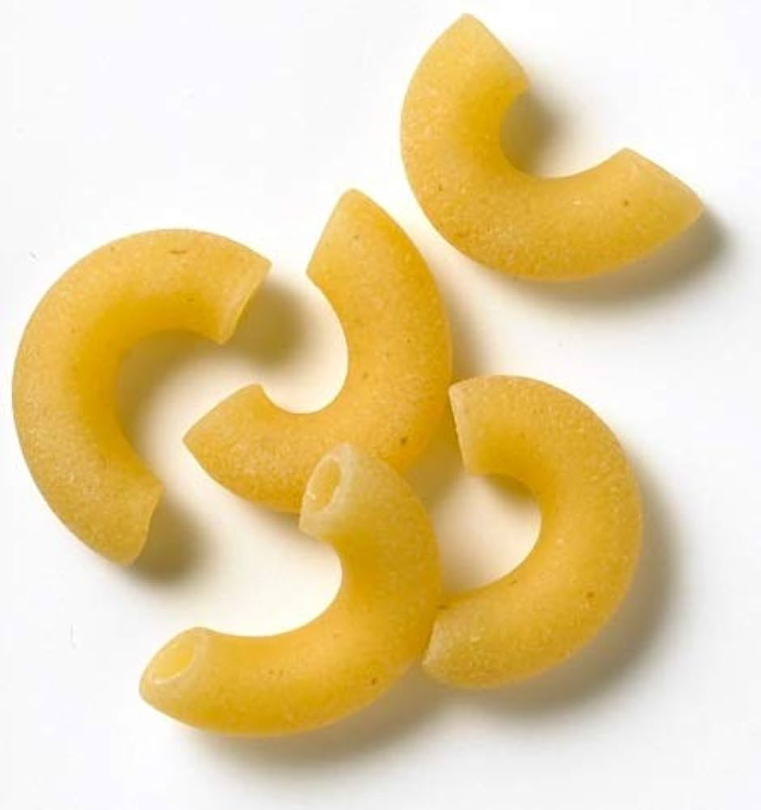
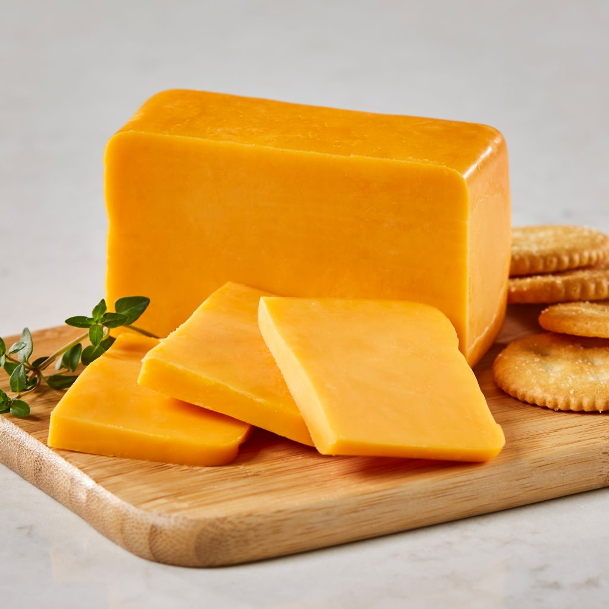
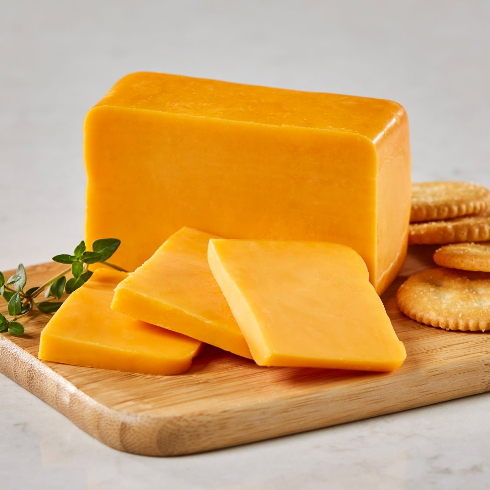
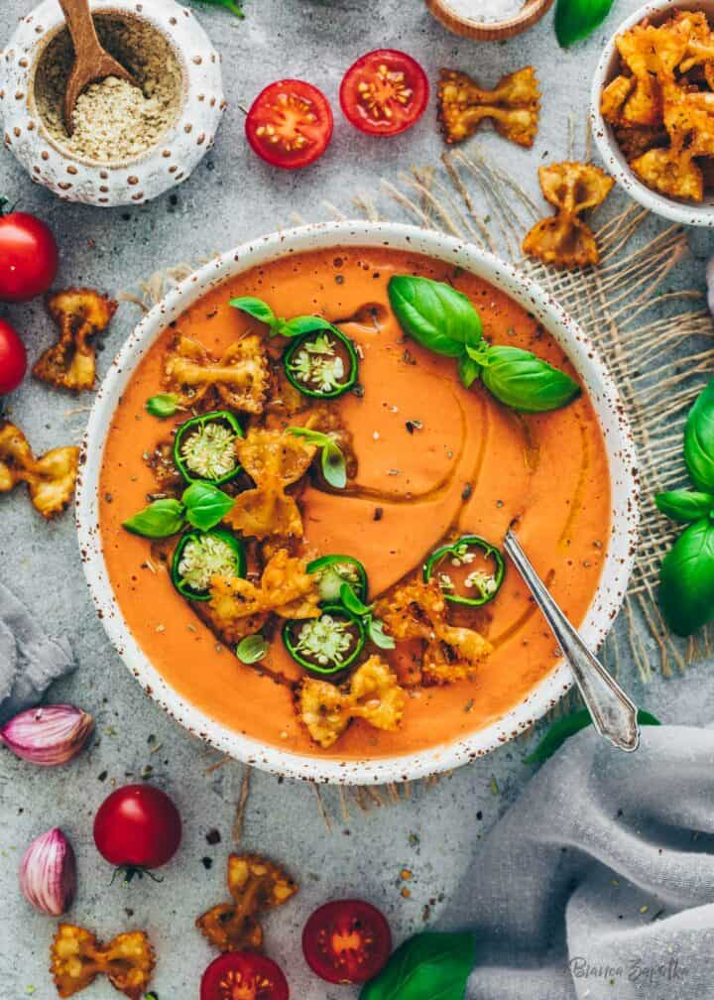
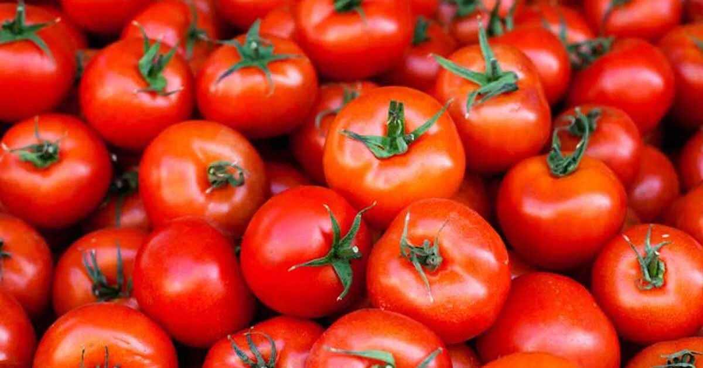
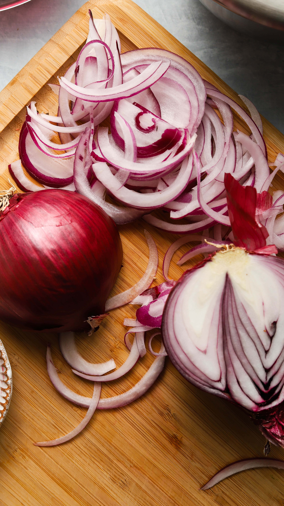
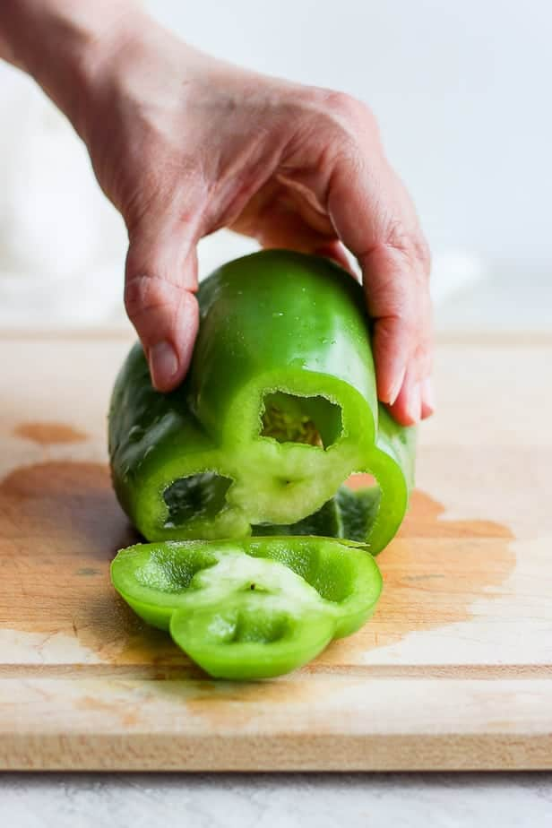
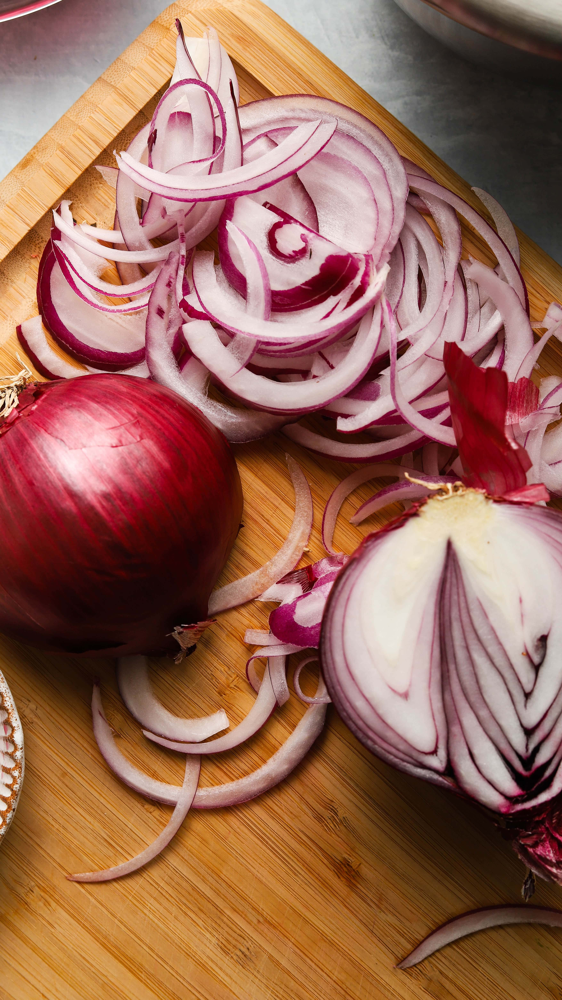
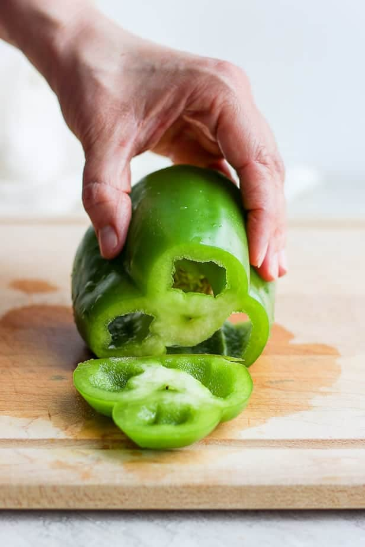

Recipes
Mac & Cheese

Mac and cheese, a beloved comfort food classic, effortlessly combines the rich creaminess of melted cheese with the satisfying embrace of tender macaroni noodles. This timeless dish, with its perfect marriage of simplicity and indulgence, has earned its place as a cherished favorite on tables around the world.
Ingredients
- 8 ounces (about 2 cups) elbow macaroni or any pasta of your choice
- 1/4 cup unsalted butter
- 1/4 cup all-purpose flour
- 1/2 teaspoon salt
- 1/4 teaspoon black pepper
- 1/4 teaspoon mustard powder (optional, for extra flavor)
- 2 1/2 cups milk
- 2 cups shredded sharp cheddar cheese
- 1/2 cup shredded mozzarella cheese (optional, for added creaminess)
Instructions
- Cook the macaroni according to package instructions until al dente. Drain and set aside.
- In a large saucepan, melt the butter over medium heat. Add the flour, salt, pepper, and mustard powder (if using). Stir constantly for about 2 minutes to create a roux.
- Gradually whisk in the milk to the roux, making sure to eliminate any lumps. Continue to cook and whisk until the mixture thickens, usually about 5-7 minutes.
- Reduce heat to low, and add the shredded cheddar cheese (and mozzarella if using). Stir until the cheese is completely melted and the sauce is smooth.
- Add the cooked macaroni to the cheese sauce, stirring until the pasta is well coated.
- Remove from heat and let it sit for a couple of minutes to allow the sauce to thicken slightly.
- Serve the mac and cheese hot, and optionally, you can sprinkle extra cheese on top or add breadcrumbs for a crunchy topping.
Photo Gallery
 

Chocolate Chip Cookie

Indulge your sweet tooth with a classic chocolate chip cookie recipe, blending the perfect harmony of buttery dough and rich chocolate morsels for a timeless, homemade treat. Whether chewy or crispy, these cookies are a beloved delight that brings joy to every palate.
Ingredients
- 1 cup (2 sticks) unsalted butter, softened
- 3/4 cup granulated sugar
- 3/4 cup packed brown sugar
- 2 large eggs
- 1 teaspoon vanilla extract
- 2 1/4 cups all-purpose flour
- 1 teaspoon baking soda
- 1/2 teaspoon salt
- 2 cups chocolate chips
Instructions
- Preheat your oven to 375°F (190°C) and line a baking sheet with parchment paper.
- In a large mixing bowl, cream together the softened butter, granulated sugar, and brown sugar until smooth and fluffy.
- Add the eggs one at a time, beating well after each addition. Stir in the vanilla extract.
- In a separate bowl, whisk together the flour, baking soda, and salt. Gradually add this dry mixture to the wet ingredients, mixing until just combined.
- Fold in the chocolate chips evenly throughout the dough.
- Drop rounded tablespoons of dough onto the prepared baking sheet, leaving some space between each cookie.
- Bake in the preheated oven for 9-11 minutes or until the edges are golden but the centers are still soft.
- Allow the cookies to cool on the baking sheet for a few minutes before transferring them to a wire rack to cool completely.
Photo Gallery


Spanish Cold Soup
Gazpacho, the quintessential Spanish cold soup, captures the vibrant essence of the Mediterranean with its refreshing medley of ripe tomatoes, crisp cucumbers, and colorful bell peppers. Served chilled, this iconic dish is a perfect embodiment of summer simplicity, delivering a burst of flavors that dance harmoniously on the palate.
Ingredients
- 6 ripe tomatoes, chopped
- 1 bell pepper (red or green), chopped
- 1 small red onion, chopped
- 2 cloves garlic, minced
- 3 cups tomato juice
- 1/4 cup red wine vinegar
- Salt and pepper to taste
Instructions
- In a blender or food processor, combine the chopped tomatoes, cucumber, bell pepper, red onion, and minced garlic.
- Blend the vegetables until smooth or your desired consistency.
- Pour the tomato juice, red wine vinegar, and extra virgin olive oil into the blender. Blend again until well combined.
- Season the gazpacho with salt and pepper to taste. Adjust the seasoning as needed.
- Transfer the gazpacho to a large bowl and refrigerate for at least 2 hours to chill and allow the flavors to meld.
- Before serving, give the gazpacho a good stir. Taste and adjust the seasoning if necessary.
- Serve the cold gazpacho in bowls, and if desired, top with croutons, chopped cucumber, diced bell pepper, or a drizzle of olive oil.
Photo Gallery
 


